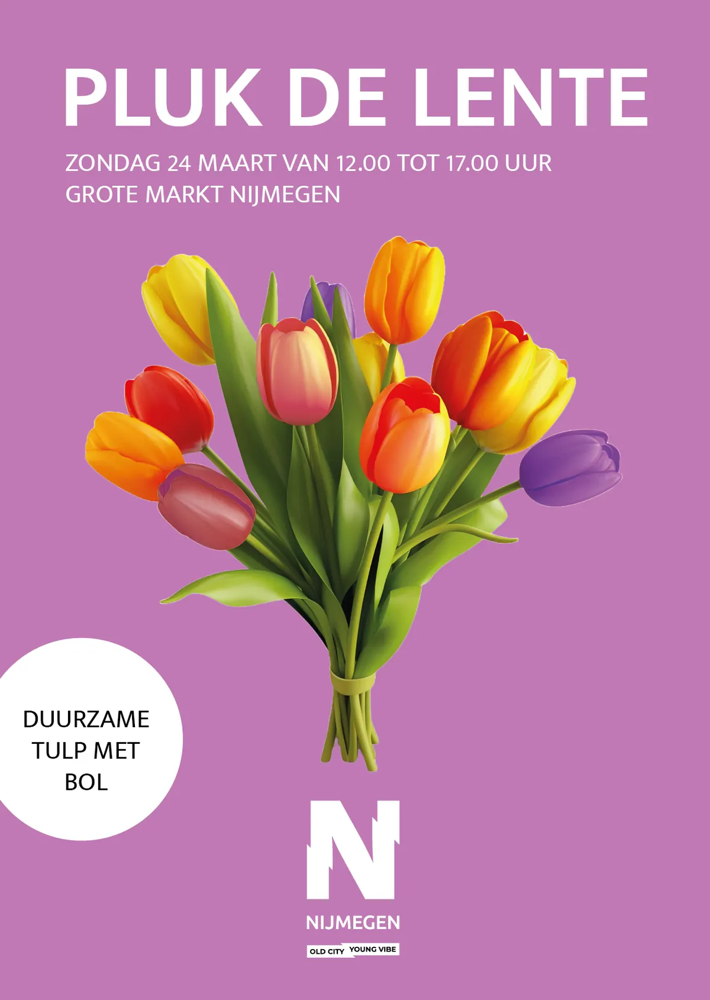

Nieuws ·
Tulpenplukmarkt op de Grote Markt op zondag 24 maart

Op zondag 24 maart, van 12.00 tot 17.00 uur, wordt de Grote Markt in Nijmegen omgetoverd tot een grote kleurrijke tulpenpluktuin met 30.000 tulpen!
Bij een aankoop (minimaal €10,- / op 23 of 24 maart) bij één van de ondernemers in de binnenstad van Nijmegen mag je op 24 maart op vertoon van je kassabon een gratis bosje van 10 tulpen mét bol komen plukken!
Tulpenplukmarkt
Tulpenpluktuin Nijmegen wordt aangeboden door de ondernemers van de binnenstad van Nijmegen.
Voor alle informatie kijk op https://www.intonijmegen.com/plukdelente